主な処理を流れ図と共に解説する．
SIGWorldEditorが起動すると、まずWinMain()関数から実行がスタートする．そこではまず、システムの初期化処理が行われる．
具体的には、メインウィンドウクラスのコンストラクタの実行、システム初期化、メインウィンドウパネルのサイズ調整、の3つが順に実行される．
初期化が済むと、メッセージループに入る．プログラムが終了するまでこのメッセージループを繰り返して処理する．
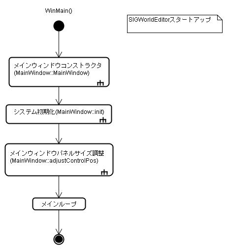
メインウィンドウコンストラクタ(MainWindow::MainWindow())では、システムのスタートアップに最低限必要な処理を行う．具体的には、メンバ変数の初期化、ログの初期化の2つである．
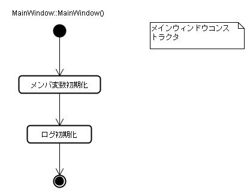
メインウィンドウコンストラクタの実行が終わると、次にSIGWorldEditorの初期化(MainWindow::init())に移る．ここでは、システムが起動するための多くの処理が行われる．
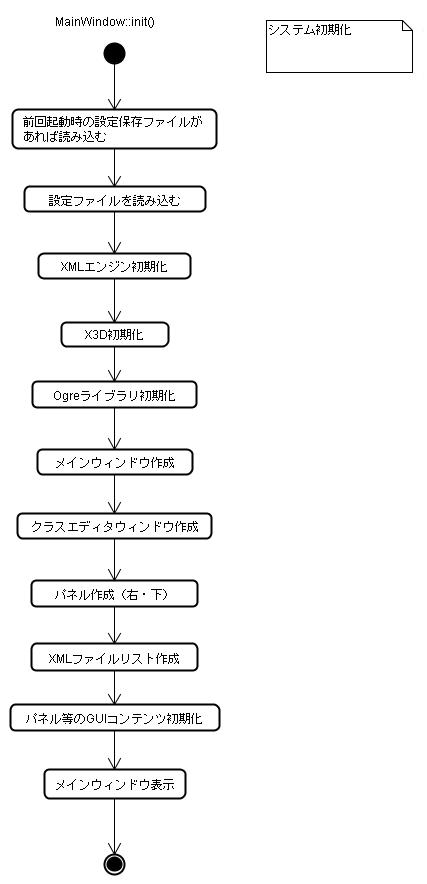
初期化の最後では、メインウィンドウの下部、右部にあるパネルの位置調整(MainWindow::adjustControlPos())が呼び出される．
これは実際のメインウィンドウの表示サイズに応じてパネルのサイズを合わせるための処理である．なお、このパネル位置調整は初期化時だけでなく、ウィンドウサイズの変更時にも行われるため、MainWindow::init()とは独立したメソッドになっている．
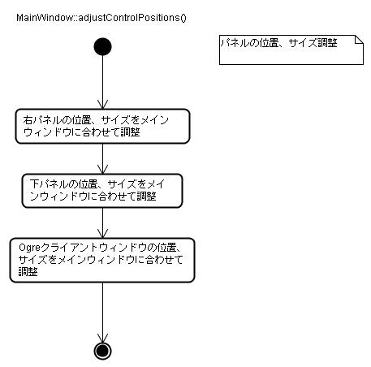
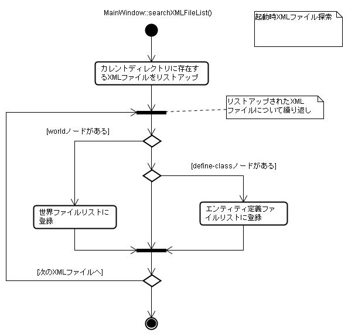
SIGWorldEditorでは、マウス操作により、世界表示ウィンドウ上に任意のエンティティを追加できる．
世界表示ウィンドウ上でマウスクリックを行うと、OgreClientWindowクラスのonLButtonDown()メソッドがコールされる．エンティティの追加はまず、世界オブジェクト(XMLWorld)クラスに新しいエンティティを生成し、その後X3D形状を読み込みOgreエンティティを生成することで行われる．
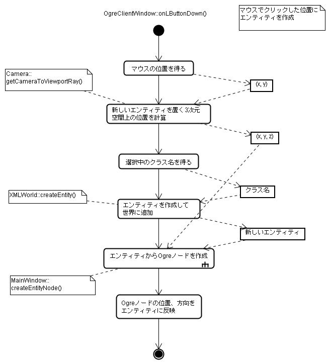
世界オブジェクトに登録されているエンティティからOgreノードを生成するのは、MainWindow::createEntityNode()メソッドである．
createEntityNode()は、まずエンティティからエンティティクラス(XMLEntityClass)を取り出す．エンティティクラスはエンティティ定義XMLファイルに対応するクラスで、X3D形状ファイル名などのクラスの定義情報を保持している．
取得したX3D形状ファイル名から静止物体またはヒューマノイドのOgreノードを生成する．ヒューマノイド形状は各ジョイントを個別に動かす必要があるため、追加で各ジョイントへのマップが作成される．
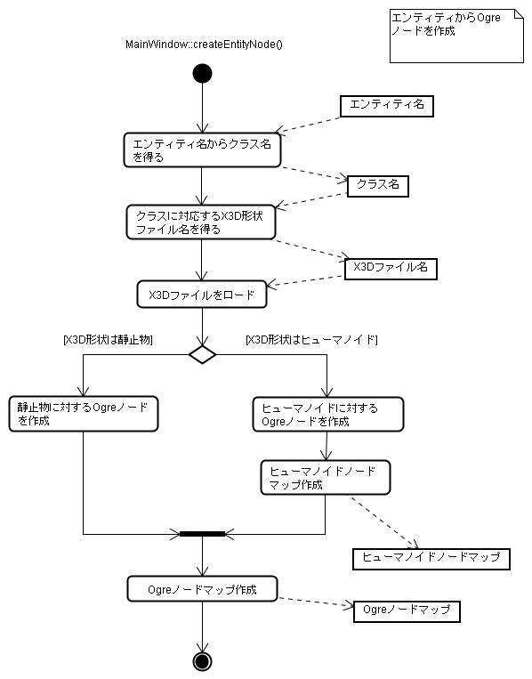
なお、MainWindow::createEntityNode()は、XMLファイルをロードする際にも使われる．
SIGWorldEditorでは、エンティティをマウスで選択した状態でDeleteキーを押すと、エンティティを削除できる
エンティティの削除は、MainWindow::deleteEntity()メソッドにより行われる．エンティティは複数のオブジェクトやマップにわたって登録されているので、それらすべてから消す作業が行われる．
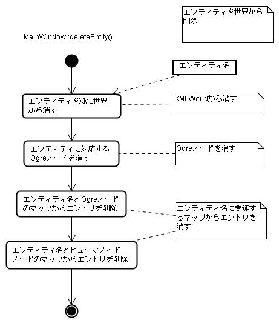
世界ファイルのロードはMainWindow::loadWorldXMLFile()で行われる．
世界オブジェクト(XMLWorld)のloadFromXML()メソッドで世界ファイルを読み込む． 次にロードした世界ファイル内のすべてのエンティティについてOgreノードの作成、マップへの登録等を行う．このとき、画面上へのエンティティへの追加でも使われたMainWindow::createEntityNode()メソッドが使用される．
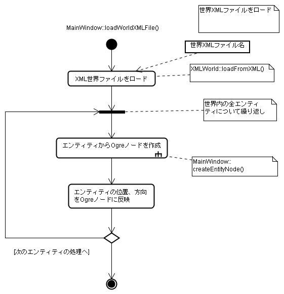
世界ファイルのセーブはMainWindow::saveWorldXMLFileで行われる．
操作中の世界情報は世界オブジェクト(XMLWorld)に逐次的に記録されているので、単にXMLWorldのセーブ用メソッドをコールするだけで済む
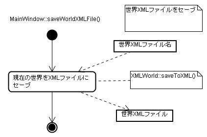
画面上でエンティティをクリックすると、エンティティの属性が表示される．
クリックしたエンティティからまずエンティティ名を取得し、画面右パネルの選択中エンティティ名表示エリアに名前を表示する．次にエンティティの属性名一覧と値を更新する．
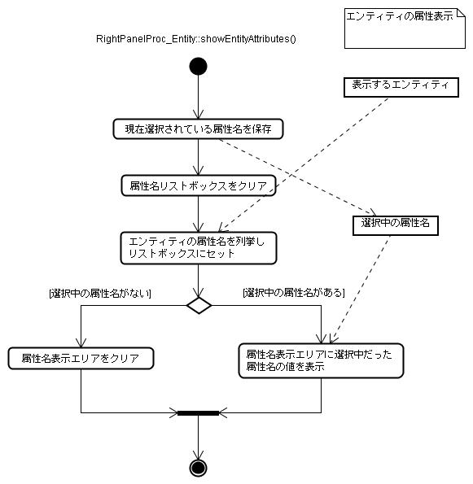
画面右パネル上のSetボタンにより、選択中のエンティティの属性値を変更できる．
ボタンが押されると、選択中のエンティティ名、リストボックス中で選択中の属性名、エディットボックスに入力されている設定値を取得する．次にこれらの情報からエンティティオブジェクトを取り出し、属性値を変更する．
設定された値のうち、位置、方向、スケール等の情報は即座にOgreノードに反映され、画面の表示形状がリアルタイムで変更される．
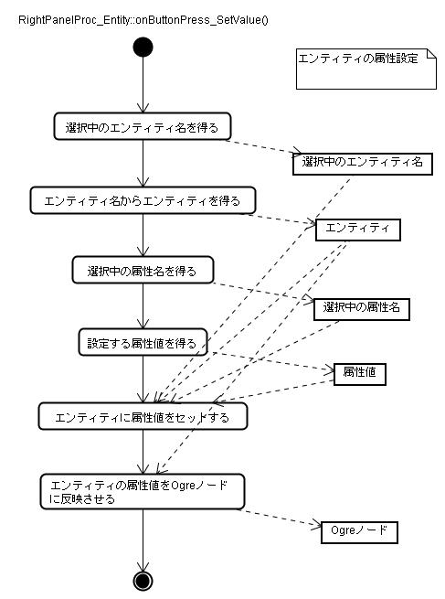
マウスでクリックしたエンティティがヒューマノイド形状だった場合、右パネルのHumanoidタブに、ジョイントの位置、向きの情報が表示される．
ヒューマノイド形状については、ヒューマノイドノードマップに、ジョイント名とそれに対応するOgreノードが登録されている．これを用いてジョイント名から、Ogreノードを取得し、位置と方向パラメータを取り出し、表示している．
ジョイント情報の表示と同じ要領で、選択したジョイントの位置、方向パラメータを設定できる．設定したパラメータは即座にOgreノードに反映され、リアルタイムで表示形態が変わる．
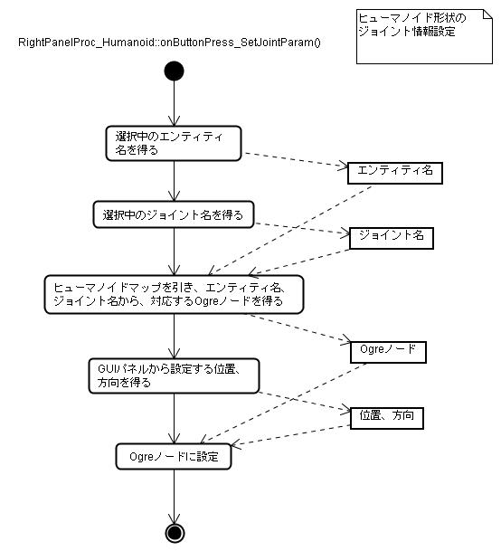
クラスエディタウィンドウを使ってエンティティのクラス定義を編集できる．
クラス定義の編集では、新しいクラスの作成、既存のクラスの属性の編集、既存のクラスの削除が行える．
以下にクラス定義の表示の流れを示す．表示にはエンティティクラス名と、属性名が必要である．これらはクラスエディタウィンドウのGUI部品から取り出す．次にエンティティクラス名に対応するエンティティクラス(XMLEntityClass)を取り出す．最後に属性名に対応する値を取り出し、GUIパネル上に表示する.
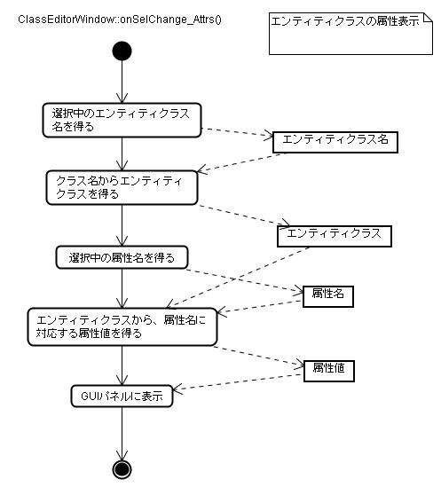
エンティティクラスの属性設定では、まず対象となるエンティティクラスの名前、型名、グループ名、値をGUI部品から取り出す．得られた値はエンティティクラス(XMLEntityClass)オブジェクトにセットされる．
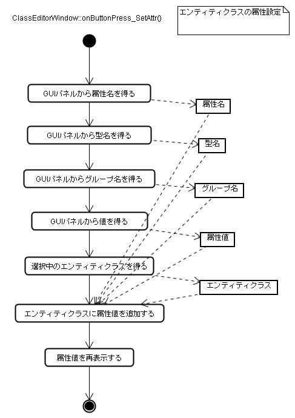
 （株）数理システム
（株）数理システム